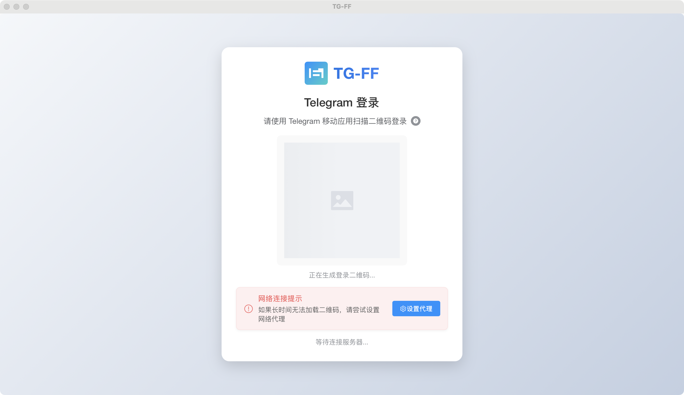
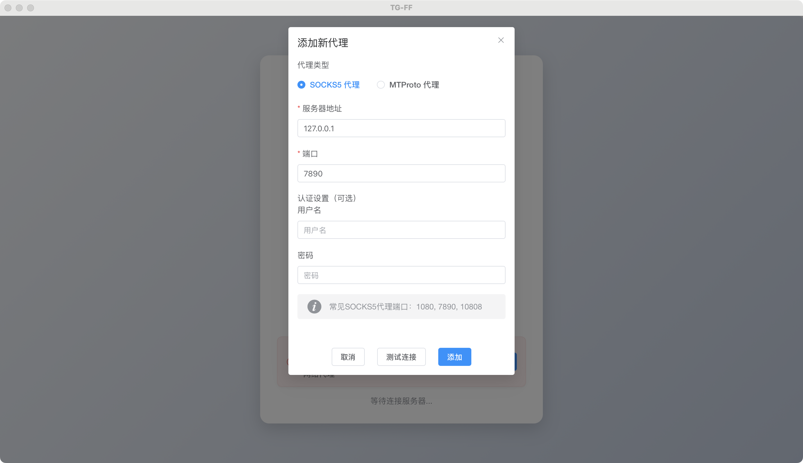
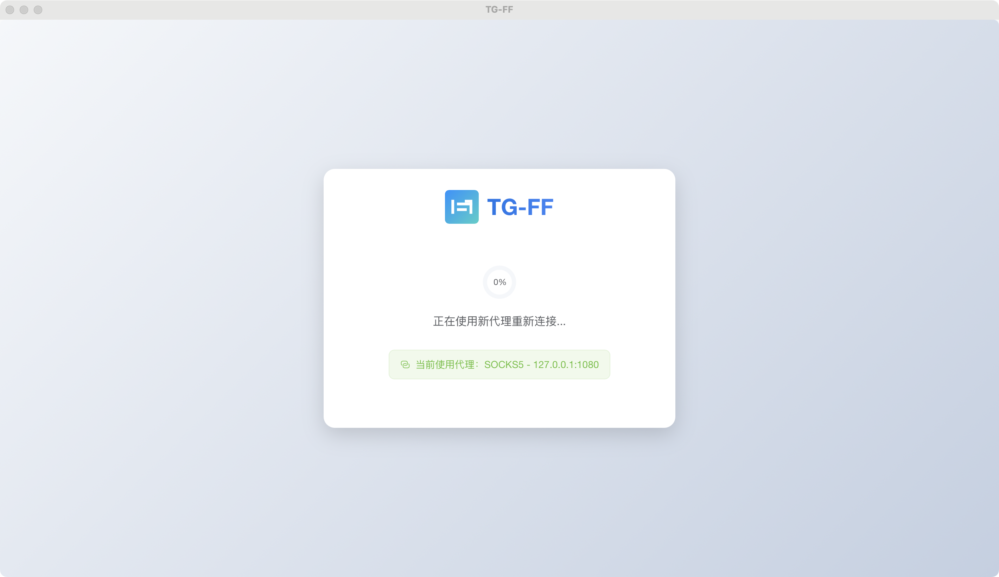
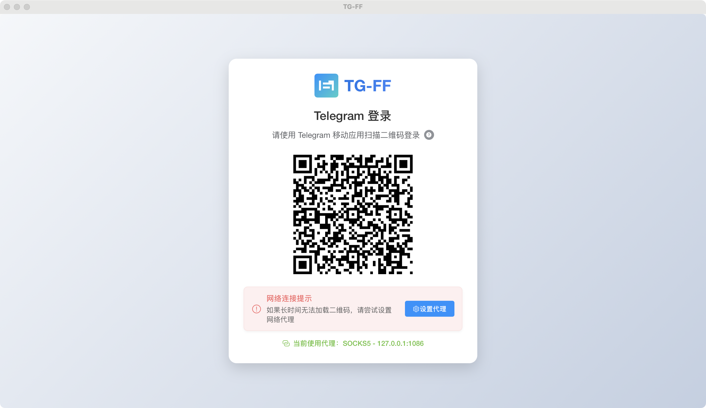
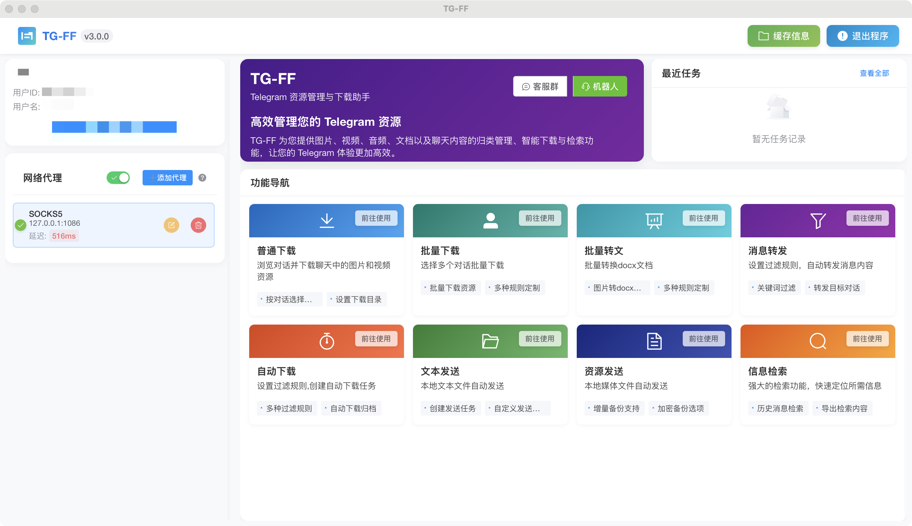

入门指南¶
本指南将帮助您快速上手TG-FF资源管理助手 v3.0.1，包括软件下载、安装、登录设置和基本使用流程。
系统要求¶
- Windows: Windows 10/11 (x86_64)
- macOS: macOS 10.15+ (x86_64)
- 网络: 可访问Telegram的网络环境（可能需要代理）
- 存储: 至少1GB可用空间用于软件安装及资源缓存
软件下载¶
TG-FF提供多种下载渠道，您可以选择最适合您的方式获取软件：
如何验证下载文件的安全性？¶
TG-FF软件包均通过以下方式保证安全性：
- 数字签名：所有官方发布的软件包都带有开发者的数字签名
- SHA256校验：GitHub发布页提供SHA256哈希值，可用于验证文件完整性
- 开源代码：关键组件代码开源，社区共同监督
如遇到安全警告，可能是因为软件使用了特定系统API，请放心使用官方渠道下载的版本。
软件安装¶
Windows系统安装步骤¶
- 下载完成后，双击
.exe安装文件 - 如遇到安全提示，点击"更多信息">"仍要运行"
- 按照安装向导提示完成安装
- 安装完成后，从桌面快捷方式或开始菜单启动软件
macOS系统安装步骤¶
- 下载完成后，双击
.dmg安装文件 - 将应用程序拖拽到Applications文件夹
- 首次运行时，右键点击应用>"打开"
- 如遇到安全提示，点击"打开"确认运行
登录设置¶
TG-FF通过Telegram的官方API接口与您的账户连接，采用安全的扫码登录方式。
为什么需要设置代理？
由于网络环境的限制，在中国大陆及部分地区，无法直接连接到Telegram服务器。因此，您必须设置代理才能使用TG-FF。代理是一种网络中继服务，可以帮助您绕过网络限制，连接到Telegram服务器。
什么是代理？如何获取代理？
代理是一种允许您通过中间服务器连接到目标网站的技术方式。获取代理的常见途径包括：
- 使用付费VPN服务，这些服务通常提供SOCKS5或HTTP代理
- 使用专用的代理工具，如Clash、V2rayN、Shadowsocks等
- 从代理服务提供商处购买专用代理
扫码登录¶

登录详细步骤:
- 初始界面: 启动软件后，您将看到登录界面，但二维码可能因网络限制无法加载（如上图所示的"等待"状态）
- 设置代理: 点击右下角的"设置代理"按钮，打开代理设置界面
网络代理设置¶

配置代理详细步骤: 1. 在登录界面点击"代理设置" 2. 选择代理类型（大多数用户应选择"SOCKS5"） 3. 填写代理服务器地址（通常是"127.0.0.1"，即本机地址） 4. 填写代理端口号（根据您的代理软件而定，见下文说明） 5. 如有需要，填写用户名和密码（多数本地代理不需要） 6. 点击"测试代理"按钮确认连接是否正常 7. 连接成功后点击"保存"应用代理设置
如何查找您的代理端口?
不同的代理客户端有不同的默认端口和查看方式：
Clash
- 默认SOCKS5端口: 7890
- 查看位置: Clash面板 → 设置 → 端口
- HTTP代理端口: 通常是7890或7891
V2rayN
- 默认SOCKS5端口: 10808 或 10809
- 查看位置: 主界面 → 设置 → 基本设置 → 本地SOCKS端口
Shadowsocks
- 默认SOCKS5端口: 1080
- 查看位置: 设置 → 本地端口
Surge
- 默认SOCKS5端口: 6152
- 查看位置: 设置 → 出站模式 → 代理设置
Quantumult X
- 默认SOCKS5端口: 7890
- 查看位置: 设置 → 本地SOCKS5/HTTP服务

代理测试: - 填写完代理信息后，点击"测试代理"按钮 - 系统将尝试通过您设置的代理连接Telegram服务器 - 上图显示系统正在测试您配置的代理 - 测试成功会显示"连接成功"提示 - 测试失败会显示错误信息，请检查代理设置是否正确

完成登录: - 代理设置正确并保存后，系统将自动加载二维码 - 使用手机Telegram应用扫描显示的二维码 - 在手机上确认登录请求 - 登录成功后软件将自动进入主界面
常见问题处理:
如果您无法成功设置代理或加载二维码，请尝试以下方法：
- 代理无法连接：
- 确认您的代理服务/VPN是否正常运行
- 检查端口号是否正确
- 尝试重启您的代理软件
-
尝试使用其他类型的代理
-
二维码加载失败：
- 点击刷新按钮重新加载二维码
- 确认代理设置正确并已保存
-
检查网络连接是否稳定
-
扫码无反应：
- 确保手机和电脑在同一网络环境下
- 更新手机Telegram应用到最新版本
-
尝试调整屏幕亮度，确保二维码清晰可见
-
登录后很快就自动退出
- 检查您的Telegram账号是否在其他设备上被登出
- 确保您的网络连接稳定，考虑使用更可靠的代理
- 检查代理服务是否仍在运行，尝试重新设置代理
您的账号安全吗？
TG-FF使用Telegram官方API接口，不会存储您的密码。软件只会将您明确指定要下载或索引的内容保存到您选择的本地目录中。其他聊天内容不会被永久存储。登录过程完全通过Telegram官方认证流程，确保账号安全。
首次使用¶
成功登录后，您将进入软件首页：

首页显示： - 您的账户信息 - 当前代理设置 - 功能导航菜单
修改代理设置¶
您可以随时在首页修改代理设置：
- 点击首页右上角的"代理设置"按钮
- 调整代理参数或切换代理类型
- 保存更改
基本功能导航¶
软件的主要功能区域包括：
- 普通下载: 浏览并下载对话中的媒体文件
- 批量下载: 一次性下载大量历史媒体内容
- 批量转文: 将图片批量转换为文档格式
- 消息转发: 自动转发消息到其他对话
- 自动下载: 设置条件自动下载新媒体内容
- 信息检索: 搜索和索引聊天内容
点击左侧导航栏中的相应选项，即可进入各功能区域。
获取帮助¶
如果您在使用过程中遇到问题，可以通过以下渠道获取帮助：
下一步¶
现在您已经完成了基本设置，可以开始使用软件的各项功能：
- 普通下载功能：了解如何下载对话中的图片和视频
- 批量下载功能：探索批量下载选项
- 自动下载功能：设置自动下载规则
- 批量转文功能：图片批量转换为文档
- 消息转发功能：自动转发消息
- 信息检索功能：搜索和管理聊天内容